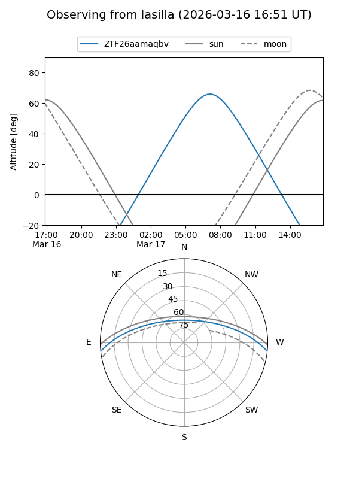
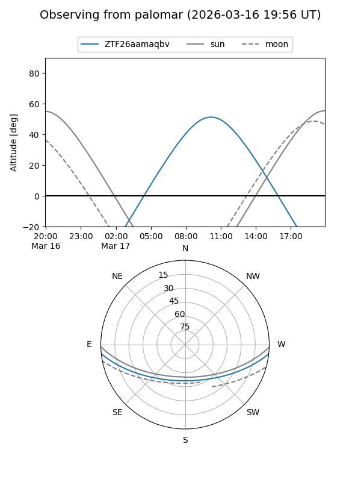

ZTF26aamaqbv
Target ZTF26aamaqbv at 2026-03-16 13:15
Aliases and brokers:
FINK: link
Lasair: link
ALeRCE: link
alt names
ZTF26aamaqbv (ztf,fink_ztf)
Coordinates:
equatorial (ra, dec) = 210.2616,-5.12390
equatorial (HMS+DMS) = 14:01:02.78,-05:07:26.04
galactic (l, b) = (333.0809,+53.62332)
Flags:
Photometry:
last ztfg=16.87
1 ztfg detections
Lightcurve
Visibility


Additional plots